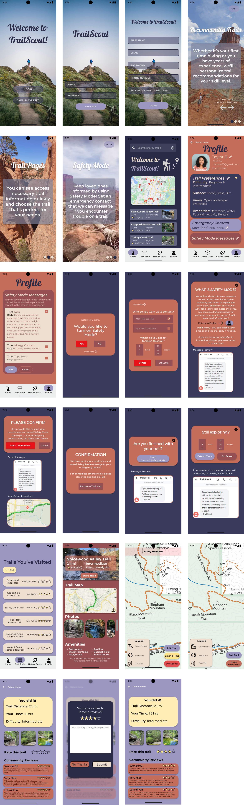
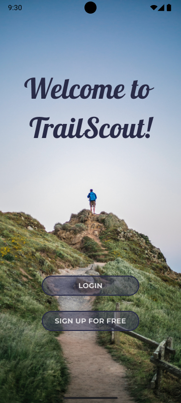

Prototype


Final Clickable Product
Explore our app for yourself!
Next Steps
Next, we would update the “Nature Facts” tab with helpful information about plants and animals that may be encountered on trails.
We would also develop a “Community” tab/feature where users could connect with others and form their own groups.


Lessons Learned
While working on this project we learned that scope-creep is a real thing and that it’s okay to save good ideas for later use.
We also learned that people love the outdoors but find it difficult to find new spots to explore that are safe and accessible for their skill level. Meaning it’s more important than ever to have recommended trails and accurate maps.